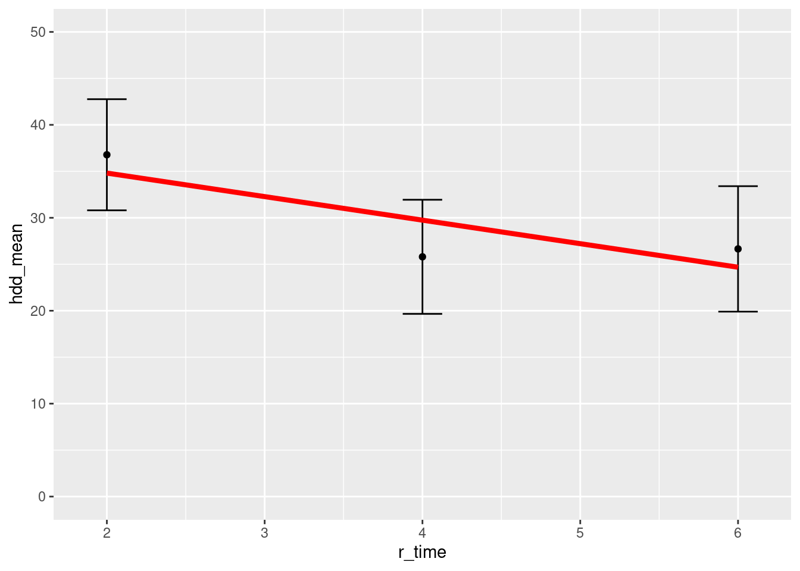

library(tidyverse)
library(lme4)1 Analysis of Repeated Measures in R
This is a long exploration of how to handle repeated measures in R. It focused primarily on lm() vs lmer() but also considers aov_car() from the afex package. It is limited to considering a single within subject variable with 2 or 3 levels but the conclusions generalize to models that also include between subject factors.
Conclusions:
I prefer simple
lm()with difference scores for 2 and 3 level time variable if I don’t need/want to test main effect (2df) of time (which is suspect anyway) and I do want 1df time contrasts. [If I really need the main effect test, useaov_car()].HOWEVER,
aov_car()should be considered. It gives same 1df contrasts (usingemmeanspackage). It does give main effect of time with corrections for violations if desired and it allows you to keep data in long format! Not sure (not tested) if it could handle quantitiave between subject factors like lm() can.
lmer() with time as quantitative variable is preferred if I can focus on only the linear effect (assuming 3 levels) and particularly if I have missing data or timepoints that vary by participant. If I had more time points and could also get quad, this might be better than lm() too because simpler than the many contrast possible with 4 levels of time.
If I had psuedoreplications on time, I would prefer the lmer() approach with categorical time because we could then model the by subject random slope for time and not worry about the sphericity assumption and stay in long format, etc. If more levels (than 3) for time, I’d switch to lmer() with random slopes and quantitative time
1.1 Set up
1.1.1 Load packages and data
1.1.2 Read and format data in long format
d_long <- read_csv("repeated_measures.csv", col_types = cols()) |>
filter(dyad == "Patient") |>
select(-dyad) |>
filter(time > 0) |>
glimpse()Rows: 99
Columns: 4
$ study_id <dbl> 600, 600, 600, 101, 101, 101, 102, 102, 102, 100, 100, 100, 1…
$ arm <chr> "PartnerCHESS", "PartnerCHESS", "PartnerCHESS", "A-CHESS", "A…
$ time <dbl> 1, 2, 3, 1, 2, 3, 1, 2, 3, 1, 2, 3, 1, 2, 3, 1, 2, 3, 1, 2, 3…
$ hdd <dbl> 65.0, 59.5, 42.0, 100.0, 100.0, 100.0, 0.0, 0.0, 0.0, 13.6, 1…d_long |> print(n = 10)# A tibble: 99 × 4
study_id arm time hdd
<dbl> <chr> <dbl> <dbl>
1 600 PartnerCHESS 1 65
2 600 PartnerCHESS 2 59.5
3 600 PartnerCHESS 3 42
4 101 A-CHESS 1 100
5 101 A-CHESS 2 100
6 101 A-CHESS 3 100
7 102 PartnerCHESS 1 0
8 102 PartnerCHESS 2 0
9 102 PartnerCHESS 3 0
10 100 PartnerCHESS 1 13.6
# ℹ 89 more rows1.1.3 Format data in wide format
d_wide <- d_long |>
select(study_id, arm, time, hdd) |>
pivot_wider(names_from = time, values_from = hdd) |>
rename(time1 = `1`,
time2 = `2`,
time3 = `3`) |>
glimpse()Rows: 33
Columns: 5
$ study_id <dbl> 600, 101, 102, 100, 106, 104, 105, 200, 107, 201, 108, 109, 3…
$ arm <chr> "PartnerCHESS", "A-CHESS", "PartnerCHESS", "PartnerCHESS", "P…
$ time1 <dbl> 65.0, 100.0, 0.0, 13.6, 64.4, 100.0, 23.8, 100.0, 4.8, 46.6, …
$ time2 <dbl> 59.5, 100.0, 0.0, 1.4, 41.9, 0.0, 0.0, 100.0, 0.0, 50.0, 100.…
$ time3 <dbl> 42.0, 100.0, 0.0, 84.6, 94.4, 0.0, 0.0, 56.1, 0.0, 100.0, 100…d_wide |> print(n = 10)# A tibble: 33 × 5
study_id arm time1 time2 time3
<dbl> <chr> <dbl> <dbl> <dbl>
1 600 PartnerCHESS 65 59.5 42
2 101 A-CHESS 100 100 100
3 102 PartnerCHESS 0 0 0
4 100 PartnerCHESS 13.6 1.4 84.6
5 106 PartnerCHESS 64.4 41.9 94.4
6 104 A-CHESS 100 0 0
7 105 PartnerCHESS 23.8 0 0
8 200 PartnerCHESS 100 100 56.1
9 107 A-CHESS 4.8 0 0
10 201 A-CHESS 46.6 50 100
# ℹ 23 more rows1.1.4 Setting contrast matrices for factors
- see: https://marissabarlaz.github.io/portfolio/contrastcoding/
- Default for unordered factors is treatment/dummy
- We typically want centered orthogonal, and unit weighted. Helmert often good choice
- Below, we demo how to set up contrast matrices by code
- We will apply them later as needed
- We make Helmert contrast matrices for 2 and 3 level factors here
(helmert2 = matrix(c(-.5, .5), ncol = 1, dimnames = list(c("time1", "time2"), c("t2v1")))) t2v1
time1 -0.5
time2 0.5(helmert3 = matrix(c(-2/3, 1/3, 1/3, 0, -.5, .5), ncol = 2, dimnames = list(c("time1", "time2", "time3"), c("t32v1", "t3v2")))) t32v1 t3v2
time1 -0.6666667 0.0
time2 0.3333333 -0.5
time3 0.3333333 0.51.2 Explore two level repeated measures
- Use only time 1 and time 2 to demo two level repeated measures analyses
d2_long <- d_long |>
filter(time < 3) |>
glimpse()Rows: 66
Columns: 4
$ study_id <dbl> 600, 600, 101, 101, 102, 102, 100, 100, 106, 106, 104, 104, 1…
$ arm <chr> "PartnerCHESS", "PartnerCHESS", "A-CHESS", "A-CHESS", "Partne…
$ time <dbl> 1, 2, 1, 2, 1, 2, 1, 2, 1, 2, 1, 2, 1, 2, 1, 2, 1, 2, 1, 2, 1…
$ hdd <dbl> 65.0, 59.5, 100.0, 100.0, 0.0, 0.0, 13.6, 1.4, 64.4, 41.9, 10…d2_wide <- d_wide |>
select(-time3) |>
glimpse()Rows: 33
Columns: 4
$ study_id <dbl> 600, 101, 102, 100, 106, 104, 105, 200, 107, 201, 108, 109, 3…
$ arm <chr> "PartnerCHESS", "A-CHESS", "PartnerCHESS", "PartnerCHESS", "P…
$ time1 <dbl> 65.0, 100.0, 0.0, 13.6, 64.4, 100.0, 23.8, 100.0, 4.8, 46.6, …
$ time2 <dbl> 59.5, 100.0, 0.0, 1.4, 41.9, 0.0, 0.0, 100.0, 0.0, 50.0, 100.…1.2.1 diff score approach
This is the standard/traditional way to analyse this design and the benchmark for comparison
- Time effect tested using difference score for time2 - time1
- Explicitly calculate that difference score in df
- No assumption of sphericity is needed
This is the test of the two level Time variable
d_wide |>
mutate(diff = time2 - time1) |>
lm(diff ~ 1, data = _) |>
summary()
Call:
lm(formula = diff ~ 1, data = mutate(d_wide, diff = time2 - time1))
Residuals:
Min 1Q Median 3Q Max
-89.018 -11.518 6.182 10.982 34.582
Coefficients:
Estimate Std. Error t value Pr(>|t|)
(Intercept) -10.982 3.984 -2.756 0.00958 **
---
Signif. codes: 0 '***' 0.001 '**' 0.01 '*' 0.05 '.' 0.1 ' ' 1
Residual standard error: 22.89 on 32 degrees of freedomIf you wanted to test the intercept in the between subject model you could do this. Not really useful here, but can be informative in some situations and also used when we have between subject variables in the design.
d_wide |>
mutate(ave = (time2 + time1) / 2) |>
lm(ave ~ 1, data = _) |>
summary()
Call:
lm(formula = ave ~ 1, data = mutate(d_wide, ave = (time2 + time1)/2))
Residuals:
Min 1Q Median 3Q Max
-31.291 -28.741 -8.791 17.009 68.709
Coefficients:
Estimate Std. Error t value Pr(>|t|)
(Intercept) 31.291 5.724 5.467 5.11e-06 ***
---
Signif. codes: 0 '***' 0.001 '**' 0.01 '*' 0.05 '.' 0.1 ' ' 1
Residual standard error: 32.88 on 32 degrees of freedom1.2.2 lmer approach with time as manually coded regressor
- This is first option using manually coded regressor for time (time_2v1, 0.5 vs. -0.5)
- Use random intercept but no random slope for time when there are no psuedoreplications (i.e., where there is only one observation per cell). It is not possible to calculate both a by-subject random slope AND a by-subject random intercept for Time for each subject when there are only two observations for Time (i.e., this “two parameter” model would perfectly fit the two observations available for each subject!)
- Use
Anova()from car package on lmer object to get p-values
First code the regressor for the time contrast
d2_long <- d2_long |>
mutate(time_2v1 = if_else(time == 1, -.5, .5)) |>
glimpse()Rows: 66
Columns: 5
$ study_id <dbl> 600, 600, 101, 101, 102, 102, 100, 100, 106, 106, 104, 104, 1…
$ arm <chr> "PartnerCHESS", "PartnerCHESS", "A-CHESS", "A-CHESS", "Partne…
$ time <dbl> 1, 2, 1, 2, 1, 2, 1, 2, 1, 2, 1, 2, 1, 2, 1, 2, 1, 2, 1, 2, 1…
$ hdd <dbl> 65.0, 59.5, 100.0, 100.0, 0.0, 0.0, 13.6, 1.4, 64.4, 41.9, 10…
$ time_2v1 <dbl> -0.5, 0.5, -0.5, 0.5, -0.5, 0.5, -0.5, 0.5, -0.5, 0.5, -0.5, …d2_long |> print(n = 10)# A tibble: 66 × 5
study_id arm time hdd time_2v1
<dbl> <chr> <dbl> <dbl> <dbl>
1 600 PartnerCHESS 1 65 -0.5
2 600 PartnerCHESS 2 59.5 0.5
3 101 A-CHESS 1 100 -0.5
4 101 A-CHESS 2 100 0.5
5 102 PartnerCHESS 1 0 -0.5
6 102 PartnerCHESS 2 0 0.5
7 100 PartnerCHESS 1 13.6 -0.5
8 100 PartnerCHESS 2 1.4 0.5
9 106 PartnerCHESS 1 64.4 -0.5
10 106 PartnerCHESS 2 41.9 0.5
# ℹ 56 more rowsThen do analysis.
- Do NOT use by subject random slope for time as noted above
- Both parameter estimates (time and intercept) match above
- p value for time and intercept match traditional diff score analysis
m2a <- d2_long |>
lmer(hdd ~ time_2v1 + (1 | study_id), data = _)
m2aLinear mixed model fit by REML ['lmerMod']
Formula: hdd ~ time_2v1 + (1 | study_id)
Data: d2_long
REML criterion at convergence: 612.5259
Random effects:
Groups Name Std.Dev.
study_id (Intercept) 30.83
Residual 16.19
Number of obs: 66, groups: study_id, 33
Fixed Effects:
(Intercept) time_2v1
31.29 -10.98 m2a |>
car::Anova(type = 3, test = "F")Analysis of Deviance Table (Type III Wald F tests with Kenward-Roger df)
Response: hdd
F Df Df.res Pr(>F)
(Intercept) 29.8846 1 32 5.109e-06 ***
time_2v1 7.5963 1 32 0.009575 **
---
Signif. codes: 0 '***' 0.001 '**' 0.01 '*' 0.05 '.' 0.1 ' ' 11.2.3 lmer approach with time as factor
- Code time as a factor
d2_long <- d2_long |>
mutate(time = factor(time, labels = c("time1", "time2")))- Default contrasts for Time were treatment/dummy
- We will apply centered (helmert) contrast matrix from earlier
contrasts(d2_long$time) time2
time1 0
time2 1contrasts(d2_long$time) <- helmert2
contrasts(d2_long$time) t2v1
time1 -0.5
time2 0.5- Do NOT use by subject random slope for time as described earlier
- Paremeter estimates and p-values match
m2b <- d2_long |>
lmer(hdd ~ time + (1 | study_id), data = _)
m2bLinear mixed model fit by REML ['lmerMod']
Formula: hdd ~ time + (1 | study_id)
Data: d2_long
REML criterion at convergence: 612.5259
Random effects:
Groups Name Std.Dev.
study_id (Intercept) 30.83
Residual 16.19
Number of obs: 66, groups: study_id, 33
Fixed Effects:
(Intercept) timet2v1
31.29 -10.98 m2b |>
car::Anova(type = 3, test = "F")Analysis of Deviance Table (Type III Wald F tests with Kenward-Roger df)
Response: hdd
F Df Df.res Pr(>F)
(Intercept) 29.8846 1 32 5.109e-06 ***
time 7.5963 1 32 0.009575 **
---
Signif. codes: 0 '***' 0.001 '**' 0.01 '*' 0.05 '.' 0.1 ' ' 11.2.4 lmer approach with by-subject random effect of time
- NOPE!
- ! number of observations (=66) <= number of random effects (=66) for term (1 + c_time | study_id); the random-effects parameters and the residual variance (or scale parameter) are probably unidentifiable
- This WOULD be correct if we had psudeoreplications
- This is because you cant estimate both a random intercept and a random slope for time with only two observations. The analogy would be fitting a two parameter model when N=2. Model would perfectly fit the data!
- This is true regardless if you use time as factor or regressor. Those are equivalent analyses.
d2_long |>
lmer(hdd ~ time + (1 + time | study_id), data = _) |>
car::Anova(type = 3, test = "F")You could try to force it
- ignore check of nobs vs nRe
- In checkConv(attr(opt, “derivs”), opt\(par, ctrl = control\)checkConv, :Model is nearly unidentifiable: large eigenvalue ratio - Rescale variables?
- It does yield the same solution as earlier models but with the above warning
m2c <- d2_long |>
lmer(hdd ~ time + (1 + time | study_id), data = _,
control = lmerControl(check.nobs.vs.nRE = "ignore"))
m2c
m2c |>
car::Anova(type = 3, test = "F")1.3 Explore three level repeated measures
1.3.1 Using afex::aov_car
aov_car() from afex supports traditional anova designs in R. see also aov()
- Remember that with 3 level repeated measures variables we now need to make an assumption of sphericity
- This means that the variance of all the difference scores (e.g. time1 - time2, time1-time3, time2-time3) are equal
- This assumption is similar to the assumption about equal variances across groups in between subject anovas. These assumptiosn allow each model to pool variances across groups (between subjects) or difference scores (within subject) to test the omnibus (in this case 2df) main effect. Remember that the error term for a 1 df within subject test is the variance of the difference. For 2df test, we need to pool two of these differences, which is only appropriate if those variances are the same.
- Compound symetry is a stricter form of sphericity (var1 + var2 + covar12 = k for all combos of variates) but its often needed to have sphericity assumption met.
- Machley test for sphericity exists but it is a poor test. Underpowered for small N, overpowered for large N.
- If sphericity is violated, you can do df correction (GG or HF)
First we need to set up 3-level time as a factor with helmert contrasts using the long format data
d_long <- d_long |>
mutate(time = factor(time, labels = c("time1", "time2", "time3")))
contrasts(d_long$time) time2 time3
time1 0 0
time2 1 0
time3 0 1contrasts(d_long$time) <- helmert3
contrasts(d_long$time) t32v1 t3v2
time1 -0.6666667 0.0
time2 0.3333333 -0.5
time3 0.3333333 0.5aov_car() provides us with main effect of Time (2 df) with the pooled error term (64 ddf).
- As noted above, this is only appropriate if sphericity assumption is met.
m_afex <- d_long |>
afex::aov_car(hdd ~ time + Error(study_id/time), data = _)
summary(m_afex)
Univariate Type III Repeated-Measures ANOVA Assuming Sphericity
Sum Sq num Df Error SS den Df F value Pr(>F)
(Intercept) 87588 1 104463 32 26.8308 1.178e-05 ***
time 2463 2 21227 64 3.7136 0.02979 *
---
Signif. codes: 0 '***' 0.001 '**' 0.01 '*' 0.05 '.' 0.1 ' ' 1
Mauchly Tests for Sphericity
Test statistic p-value
time 0.84158 0.069025
Greenhouse-Geisser and Huynh-Feldt Corrections
for Departure from Sphericity
GG eps Pr(>F[GG])
time 0.86325 0.0366 *
---
Signif. codes: 0 '***' 0.001 '**' 0.01 '*' 0.05 '.' 0.1 ' ' 1
HF eps Pr(>F[HF])
time 0.9079611 0.03422039- Can get corrections to dfs if assumption is violated. Use
anova()from stats package
anova(m_afex, correction = "none")Anova Table (Type 3 tests)
Response: hdd
num Df den Df MSE F ges Pr(>F)
time 2 64 331.68 3.7136 0.019222 0.02979 *
---
Signif. codes: 0 '***' 0.001 '**' 0.01 '*' 0.05 '.' 0.1 ' ' 1anova(m_afex, correction = "GG")Anova Table (Type 3 tests)
Response: hdd
num Df den Df MSE F ges Pr(>F)
time 1.7265 55.248 384.22 3.7136 0.019222 0.0366 *
---
Signif. codes: 0 '***' 0.001 '**' 0.01 '*' 0.05 '.' 0.1 ' ' 1anova(m_afex, correction = "HF")Anova Table (Type 3 tests)
Response: hdd
num Df den Df MSE F ges Pr(>F)
time 1.8159 58.11 365.3 3.7136 0.019222 0.03422 *
---
Signif. codes: 0 '***' 0.001 '**' 0.01 '*' 0.05 '.' 0.1 ' ' 1We can use emmeans package to get cell means and 1 df contrasts
- note the formula for the mean contrasts it NOT the helmert coefficients, but the actual algebraic formula for the contrasts we want.
- This ALSO gives use tests of contrasts with SEPARATE, not POOLED error (note ddf = 32)
- We want separate error because no assumption of sphericity needed
- I have not seen pooled contrasts reported though they make sense to me as an option IF pooling is appropriate given sphericity
(means <- emmeans::emmeans(m_afex, ~ time)) time emmean SE df lower.CL upper.CL
time1 36.8 5.98 32 24.6 49.0
time2 25.8 6.14 32 13.3 38.3
time3 26.7 6.75 32 12.9 40.4
Confidence level used: 0.95 emmeans::contrast(means, list(t32v1 = c(-1, .5, .5), t3v2 = c(0,-1,1))) contrast estimate SE df t.ratio p.value
t32v1 -10.556 4.23 32 -2.495 0.0180
t3v2 0.852 4.04 32 0.211 0.83441.3.2 Diff score approach
First here are the time contrast models.
- CRITICALLY, this tests contrasts with SEPARATE (rather than pooled) error. Note ddf = 32 for contrasts
- This matches contrasts from
aov_car() - This method does not provide test of main effect of time (2 df)
d_wide |>
mutate(diff_23v1 = (time2 + time3) / 2 - time1) |>
lm(diff_23v1 ~ 1, data = _) |>
summary()
Call:
lm(formula = diff_23v1 ~ 1, data = mutate(d_wide, diff_23v1 = (time2 +
time3)/2 - time1))
Residuals:
Min 1Q Median 3Q Max
-89.444 -11.394 7.206 10.556 39.956
Coefficients:
Estimate Std. Error t value Pr(>|t|)
(Intercept) -10.556 4.231 -2.495 0.018 *
---
Signif. codes: 0 '***' 0.001 '**' 0.01 '*' 0.05 '.' 0.1 ' ' 1
Residual standard error: 24.31 on 32 degrees of freedomd_wide |>
mutate(diff_3v2 = time3 - time2) |>
lm(diff_3v2 ~ 1, data = _) |>
summary()
Call:
lm(formula = diff_3v2 ~ 1, data = mutate(d_wide, diff_3v2 = time3 -
time2))
Residuals:
Min 1Q Median 3Q Max
-44.752 -3.452 -0.852 -0.852 82.348
Coefficients:
Estimate Std. Error t value Pr(>|t|)
(Intercept) 0.8515 4.0411 0.211 0.834
Residual standard error: 23.21 on 32 degrees of freedomAnd here is the main effects model for the intercept for time
d_wide |>
mutate(ave = (time1 + time2 + time3) / 3) |>
lm(ave ~ 1, data = _) |>
summary()
Call:
lm(formula = ave ~ 1, data = mutate(d_wide, ave = (time1 + time2 +
time3)/3))
Residuals:
Min 1Q Median 3Q Max
-29.74 -28.04 -11.31 10.66 70.26
Coefficients:
Estimate Std. Error t value Pr(>|t|)
(Intercept) 29.744 5.742 5.18 1.18e-05 ***
---
Signif. codes: 0 '***' 0.001 '**' 0.01 '*' 0.05 '.' 0.1 ' ' 1
Residual standard error: 32.99 on 32 degrees of freedom1.3.3 lmer approach with time as factor
- We do NOT include by subject random slope for time because there are no pseudoreplications. Once again, estimating 3 parameters (random intercept and two random slopes) will perfectly fit the 3 observations per subject
- Gets 2df main effect but NOT contrasts
- Matches main effect results from
aov_car()when sphericity is assumed. - This makes some sense too. If you dont allow for random slopes, then all the subjects have the SAME difference scores for the two contrasts and therefore 0 variance. Thus the variance of both are the same and we are just left with variance in intercept and residual within subject.
- This solution is not appropriate if sphericity is not met
- And you would need to got to
aov_car()or similar to test for sphericity and get corrections if needed. NOT A GOOD SOLUTION IMHO
m3a<- d_long |>
lmer(hdd ~ time + (1 | study_id), data = _)
m3aLinear mixed model fit by REML ['lmerMod']
Formula: hdd ~ time + (1 | study_id)
Data: d_long
REML criterion at convergence: 913.2997
Random effects:
Groups Name Std.Dev.
study_id (Intercept) 31.27
Residual 18.21
Number of obs: 99, groups: study_id, 33
Fixed Effects:
(Intercept) timet32v1 timet3v2
29.7444 -10.5561 0.8515 m3a |> car::Anova(type = 3, test = "F")Analysis of Deviance Table (Type III Wald F tests with Kenward-Roger df)
Response: hdd
F Df Df.res Pr(>F)
(Intercept) 26.8308 1 32 1.178e-05 ***
time 3.7136 2 64 0.02979 *
---
Signif. codes: 0 '***' 0.001 '**' 0.01 '*' 0.05 '.' 0.1 ' ' 11.3.4 lmer approach with regressors for time
- Do NOT include by subject random slope for time because no pseudoreplications
- Gets 1 df contrasts for time and parameter estimates match
- BUT uses a pooled error to test contrasts. ddf = 64. So p-values do NOT match. Appropriate (better?) if sphericity holds but definitely not if it doesn’t!
- Does not get main effect (2df) for time
First, add regressors for helmert contrasts for three level time variable
d_long <- d_long |>
mutate(time_32v1 = case_match(time,
"time1" ~ -2/3,
c("time2", "time3") ~ 1/3),
time_3v2 = case_match(time,
"time1" ~ 0,
"time2" ~ -.5,
"time3" ~ .5))
d_long |> print(n = 10)# A tibble: 99 × 6
study_id arm time hdd time_32v1 time_3v2
<dbl> <chr> <fct> <dbl> <dbl> <dbl>
1 600 PartnerCHESS time1 65 -0.667 0
2 600 PartnerCHESS time2 59.5 0.333 -0.5
3 600 PartnerCHESS time3 42 0.333 0.5
4 101 A-CHESS time1 100 -0.667 0
5 101 A-CHESS time2 100 0.333 -0.5
6 101 A-CHESS time3 100 0.333 0.5
7 102 PartnerCHESS time1 0 -0.667 0
8 102 PartnerCHESS time2 0 0.333 -0.5
9 102 PartnerCHESS time3 0 0.333 0.5
10 100 PartnerCHESS time1 13.6 -0.667 0
# ℹ 89 more rowsm3b <- d_long |>
lme4::lmer(hdd ~ time_32v1 + time_3v2 + (1 | study_id), data = _)
m3bLinear mixed model fit by REML ['lmerMod']
Formula: hdd ~ time_32v1 + time_3v2 + (1 | study_id)
Data: d_long
REML criterion at convergence: 913.2997
Random effects:
Groups Name Std.Dev.
study_id (Intercept) 31.27
Residual 18.21
Number of obs: 99, groups: study_id, 33
Fixed Effects:
(Intercept) time_32v1 time_3v2
29.7444 -10.5561 0.8515 m3b |>
car::Anova(type = 3, test = "F")Analysis of Deviance Table (Type III Wald F tests with Kenward-Roger df)
Response: hdd
F Df Df.res Pr(>F)
(Intercept) 26.8308 1 32 1.178e-05 ***
time_32v1 7.3911 1 64 0.008426 **
time_3v2 0.0361 1 64 0.849971
---
Signif. codes: 0 '***' 0.001 '**' 0.01 '*' 0.05 '.' 0.1 ' ' 11.3.5 lmer approach with regressors for time AND separate error terms
I don’t show code for this but we could aggregate down to long format but just the two levels (with two rows per subject) of time separately for each time contrast and then we would be back to the 2 level lmer approach to time from above. This would be fine but its cumbersome so I don’t think this is worth it.
1.3.6 With random effect for time
- NOPE
- ! number of observations (=99) <= number of random effects (=99) for term (1 + time | study_id); the random-effects parameters and the residual variance (or scale parameter) are probably unidentifiable
- Again, no pseudoreplications so no by-subject random effect for time can be estimated
m3c <- d_long |>
lmer(hdd ~ time + (1 + time | study_id), data = _)And if we force it, we get warnings… * 1: In checkConv(attr(opt, “derivs”), opt$par, ctrl = control\(checkConv, : unable to evaluate scaled gradient * In checkConv(attr(opt, "derivs"), opt\)par, ctrl = control$checkConv, : Model failed to converge: degenerate Hessian with 1 negative eigenvalues
m3c <- d_long |>
lmer(hdd ~ time + (1 + time | study_id), data = _,
control = lmerControl(check.nobs.vs.nRE = "ignore",
optCtrl = list(maxfun = 1000000)))1.3.7 lmer with time as continuous variable
Now we can specify by subject random slope for time
And this model doesn’t make sphericity assumption because it allows for the slopes to vary by subject
d_long <- d_long |>
mutate(r_time = as.numeric(time) * 2, # for 2, 4, and 6 months
c_time = r_time - 2) |>
glimpse()Rows: 99
Columns: 8
$ study_id <dbl> 600, 600, 600, 101, 101, 101, 102, 102, 102, 100, 100, 100, …
$ arm <chr> "PartnerCHESS", "PartnerCHESS", "PartnerCHESS", "A-CHESS", "…
$ time <fct> time1, time2, time3, time1, time2, time3, time1, time2, time…
$ hdd <dbl> 65.0, 59.5, 42.0, 100.0, 100.0, 100.0, 0.0, 0.0, 0.0, 13.6, …
$ time_32v1 <dbl> -0.6666667, 0.3333333, 0.3333333, -0.6666667, 0.3333333, 0.3…
$ time_3v2 <dbl> 0.0, -0.5, 0.5, 0.0, -0.5, 0.5, 0.0, -0.5, 0.5, 0.0, -0.5, 0…
$ r_time <dbl> 2, 4, 6, 2, 4, 6, 2, 4, 6, 2, 4, 6, 2, 4, 6, 2, 4, 6, 2, 4, …
$ c_time <dbl> 0, 2, 4, 0, 2, 4, 0, 2, 4, 0, 2, 4, 0, 2, 4, 0, 2, 4, 0, 2, …m_raw <- d_long |>
lmer(hdd ~ r_time + (1 + r_time | study_id), data = _)
m_rawLinear mixed model fit by REML ['lmerMod']
Formula: hdd ~ r_time + (1 + r_time | study_id)
Data: d_long
REML criterion at convergence: 917.5282
Random effects:
Groups Name Std.Dev. Corr
study_id (Intercept) 34.504
r_time 5.552 -0.44
Residual 14.732
Number of obs: 99, groups: study_id, 33
Fixed Effects:
(Intercept) r_time
39.875 -2.533 m_raw |>
car::Anova(type = 3, test = "F")Analysis of Deviance Table (Type III Wald F tests with Kenward-Roger df)
Response: hdd
F Df Df.res Pr(>F)
(Intercept) 30.9206 1 32 3.887e-06 ***
r_time 3.6522 1 32 0.06499 .
---
Signif. codes: 0 '***' 0.001 '**' 0.01 '*' 0.05 '.' 0.1 ' ' 1Centering matters - here only for intercept but more impacts with higher order models
m_center <- d_long |>
lmer(hdd ~ c_time + (1 + c_time | study_id), data = _)
m_centerLinear mixed model fit by REML ['lmerMod']
Formula: hdd ~ c_time + (1 + c_time | study_id)
Data: d_long
REML criterion at convergence: 917.5282
Random effects:
Groups Name Std.Dev. Corr
study_id (Intercept) 31.303
c_time 5.552 -0.13
Residual 14.732
Number of obs: 99, groups: study_id, 33
Fixed Effects:
(Intercept) c_time
34.810 -2.533 m_center |>
car::Anova(type = 3, test = "F")Analysis of Deviance Table (Type III Wald F tests with Kenward-Roger df)
Response: hdd
F Df Df.res Pr(>F)
(Intercept) 34.4489 1 32 1.585e-06 ***
c_time 3.6523 1 32 0.06498 .
---
Signif. codes: 0 '***' 0.001 '**' 0.01 '*' 0.05 '.' 0.1 ' ' 1To fit poly model, you probably want to use centered time because linear effect will be at time = 0 (time mid point). Or chose another sensible 0 point.
d_long <- d_long |>
mutate(c_time2 = c_time^2) |>
glimpse()Rows: 99
Columns: 9
$ study_id <dbl> 600, 600, 600, 101, 101, 101, 102, 102, 102, 100, 100, 100, …
$ arm <chr> "PartnerCHESS", "PartnerCHESS", "PartnerCHESS", "A-CHESS", "…
$ time <fct> time1, time2, time3, time1, time2, time3, time1, time2, time…
$ hdd <dbl> 65.0, 59.5, 42.0, 100.0, 100.0, 100.0, 0.0, 0.0, 0.0, 13.6, …
$ time_32v1 <dbl> -0.6666667, 0.3333333, 0.3333333, -0.6666667, 0.3333333, 0.3…
$ time_3v2 <dbl> 0.0, -0.5, 0.5, 0.0, -0.5, 0.5, 0.0, -0.5, 0.5, 0.0, -0.5, 0…
$ r_time <dbl> 2, 4, 6, 2, 4, 6, 2, 4, 6, 2, 4, 6, 2, 4, 6, 2, 4, 6, 2, 4, …
$ c_time <dbl> 0, 2, 4, 0, 2, 4, 0, 2, 4, 0, 2, 4, 0, 2, 4, 0, 2, 4, 0, 2, …
$ c_time2 <dbl> 0, 4, 16, 0, 4, 16, 0, 4, 16, 0, 4, 16, 0, 4, 16, 0, 4, 16, …But you can’t fit poly model with quadratic effect with random slopes because, once again cant estimate intercept and both random slopes without more observations per subject
Error: number of observations (=99) <= number of random effects (=99) for term (1 + c_time + c_time2 | study_id); the random-effects parameters and the residual variance (or scale parameter) are probably unidentifiable
m_poly <- d_long |>
lmer(hdd ~ c_time + c_time2 + (1 + c_time + c_time2 | study_id), data = _)But you CAN return to not estimating by subject random slopes. I suspect that this has the same sphericity issue though! Not sure about that but it seems to make sense that you are putting an unrealisitc (or at least unevaluated) assumption on the strucure of the error.
m_poly <- d_long |>
lmer(hdd ~ c_time + c_time2 + (1 | study_id), data = _)
m_polyLinear mixed model fit by REML ['lmerMod']
Formula: hdd ~ c_time + c_time2 + (1 | study_id)
Data: d_long
REML criterion at convergence: 918.8449
Random effects:
Groups Name Std.Dev.
study_id (Intercept) 31.27
Residual 18.21
Number of obs: 99, groups: study_id, 33
Fixed Effects:
(Intercept) c_time c_time2
36.782 -8.449 1.479 m_poly |>
car::Anova(type = 3, test = "F")Analysis of Deviance Table (Type III Wald F tests with Kenward-Roger df)
Response: hdd
F Df Df.res Pr(>F)
(Intercept) 34.099 1 45.389 5.255e-07 ***
c_time 4.371 1 64.000 0.04053 *
c_time2 2.322 1 64.000 0.13248
---
Signif. codes: 0 '***' 0.001 '**' 0.01 '*' 0.05 '.' 0.1 ' ' 12 Predicted values and figures
This is a demo of predicted values and plot for the model with time as a continuous variable. I use the linear model of time and raw time scores. For the plot, centering doesn’t matter. Its all the same model space and it easier to understand in raw time units. Alternatively, we could use centered time and then change the values on the axis that displays time.
# we can add the means from raw data to plot and then superimpose the fitted model
d_plot <- d_long |>
group_by(r_time) |>
summarize(hdd_mean = mean(hdd), hdd_se = sd(hdd)/ sqrt(length(hdd)))
d_plot <- d_plot |>
mutate(hdd_pred = predict(m_raw, newdata = d_plot, re.form = NA)) |>
glimpse()Rows: 3
Columns: 4
$ r_time <dbl> 2, 4, 6
$ hdd_mean <dbl> 36.78182, 25.80000, 26.65152
$ hdd_se <dbl> 5.979868, 6.140520, 6.749849
$ hdd_pred <dbl> 34.80960, 29.74444, 24.67929d_plot |>
ggplot(aes(x = r_time)) +
geom_errorbar(aes(ymin = hdd_mean - hdd_se, ymax = hdd_mean + hdd_se),
width = .25) +
geom_point(aes(y = hdd_mean)) +
geom_line(aes(y = hdd_pred), color = "red", linewidth = 1.5) +
ylim(0, 50)